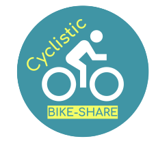

R - Bike-Share Analysis (Google Capstone)
A comprehensive data analysis project using R to identify behavioral differences between casual riders and annual members. This project showcases the full data analysis lifecycle, from cleaning to visualization and strategic recommendations.
Learn more